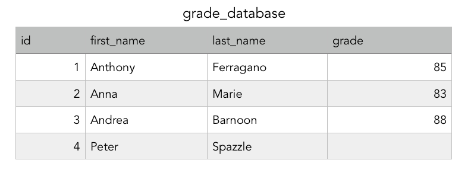

Here are some of the most important words for SQL beginners.
Here is our grade database:
Lets fill in some info in the form of SQL, and use a Comparison

The previous will SELECT the first_name FROM grade_database WHERE the grade of the individual is greater than of equal to 80. This will give us 'Anthony', 'Anna', and 'Andrea' using th ecomparison operator >=. We could also use =, <, >, <=, >=, and <>(not equal).
BETWEEN
This will give us 'Anthony', 'Anna', and 'Andrea', this time because it is asking for the first_name of those who scored between 80-90.
IS NULL
'Peter' was sick and was unable to take the test. Asking for IS NULL will return those with no value in grade.
IS NOT NULL would give us the opposite of IS NULL
LIKE
Now we are asking for the last_name of individuals whose first_name is LIKE or had 'An' somwhere in it. This will give us 'Ferragano', 'Marie', and 'Barnoon'.
The % is used to identify the missing text surrounding the desired pattern. It could be used before/after your desire pattern. _ is used to identify only one missing character in a pattern.
A few other terms I will cover on a later date:
GROUP BY
group by specific characteristics
HAVING
having by specific characteristics
ORDER BY
placing in order
ASC
is the default and will order from small to large
DESC
is the default and will order from large to small